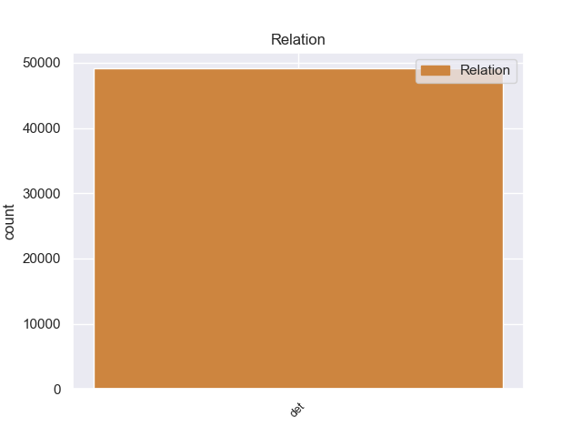
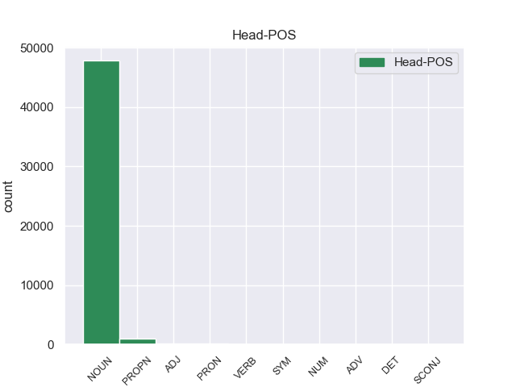
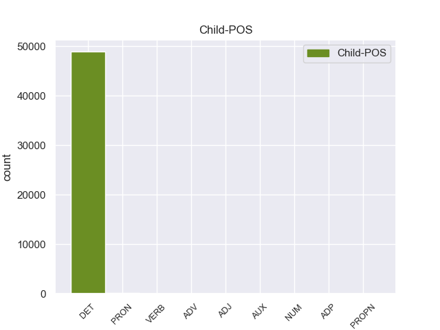

Distribution of features within this leaf



Agreement Rules sorted by frequency.
- When the dependent token is the determiner(det) of the head token, and the dependent token is DET.
1 En _ _ _ _ 0 _ _ _
2 1991 _ _ _ _ 0 _ _ _
3 , _ _ _ _ 0 _ _ _
4 como _ _ _ _ 0 _ _ _
5 ya _ _ _ _ 0 _ _ _
6 está _ _ _ _ 0 _ _ _
7 indicado _ _ _ _ 0 _ _ _
8 en _ _ _ _ 0 _ _ _
9 el _ _ _ _ 0 _ _ _
10 párrafo _ _ _ _ 0 _ _ _
11 anterior _ _ _ _ 0 _ _ _
12 , _ _ _ _ 0 _ _ _
13 se _ _ _ _ 0 _ _ _
14 creó _ _ _ _ 0 _ _ _
15 un _ _ _ _ 0 _ _ _
16 equipo _ _ _ _ 0 _ _ _
17 ad _ _ _ _ 0 _ _ _
18 hoc _ _ _ _ 0 _ _ _
19 para _ _ _ _ 0 _ _ _
20 averiguar _ _ _ _ 0 _ _ _
21 como _ _ _ _ 0 _ _ _
22 se _ _ _ _ 0 _ _ _
23 podía _ _ _ _ 0 _ _ _
24 desarrollar _ _ _ _ 0 _ _ _
25 el _ _ _ _ 0 _ _ _
26 Dialogo _ _ _ _ 0 _ _ _
27 Social _ _ _ _ 0 _ _ _
28 , _ _ _ _ 0 _ _ _
29 este _ _ _ _ 0 _ _ _
30 equipo _ _ _ _ 0 _ _ _
31 estaba _ _ _ _ 0 _ _ _
32 formado _ _ _ _ 0 _ _ _
33 por _ _ _ _ 0 _ _ _
34 representantes _ _ _ _ 0 _ _ _
35 de _ _ _ _ 0 _ _ _
36 todas _ _ _ _ 0 _ _ _
37 las el DET _ Definite=Def|Gender=Fem|Number=Plur|PronType=Art 38 det _ _
38 organizaciones organizacione NOUN _ Gender=Fem|Number=Plur 0 _ _ _
39 relacionadas _ _ _ _ 0 _ _ _
40 con _ _ _ _ 0 _ _ _
41 CES _ _ _ _ 0 _ _ _
42 , _ _ _ _ 0 _ _ _
43 UNICE _ _ _ _ 0 _ _ _
44 y _ _ _ _ 0 _ _ _
45 CEEP _ _ _ _ 0 _ _ _
46 ; _ _ _ _ 0 _ _ _
1 Jazmin _ _ _ _ 0 _ _ _
2 es _ _ _ _ 0 _ _ _
3 todo _ _ _ _ 0 _ _ _
4 lo lo PRON _ Case=Acc|Gender=Masc|Number=Sing|Person=3|PrepCase=Npr|PronType=Prs 5 det _ _
5 contrario contrario ADJ _ Gender=Masc|Number=Sing 0 _ _ _
6 , _ _ _ _ 0 _ _ _
7 es _ _ _ _ 0 _ _ _
8 tímida _ _ _ _ 0 _ _ _
9 y _ _ _ _ 0 _ _ _
10 callada _ _ _ _ 0 _ _ _
11 , _ _ _ _ 0 _ _ _
12 pero _ _ _ _ 0 _ _ _
13 siempre _ _ _ _ 0 _ _ _
14 es _ _ _ _ 0 _ _ _
15 arrastrada _ _ _ _ 0 _ _ _
16 por _ _ _ _ 0 _ _ _
17 las _ _ _ _ 0 _ _ _
18 locuras _ _ _ _ 0 _ _ _
19 y _ _ _ _ 0 _ _ _
20 travesuras _ _ _ _ 0 _ _ _
21 que _ _ _ _ 0 _ _ _
22 inventa _ _ _ _ 0 _ _ _
23 Alma _ _ _ _ 0 _ _ _
24 . _ _ _ _ 0 _ _ _
1 Es _ _ _ _ 0 _ _ _
2 frecuente _ _ _ _ 0 _ _ _
3 que _ _ _ _ 0 _ _ _
4 el _ _ _ _ 0 _ _ _
5 café _ _ _ _ 0 _ _ _
6 sea _ _ _ _ 0 _ _ _
7 torrefacto _ _ _ _ 0 _ _ _
8 , _ _ _ _ 0 _ _ _
9 y _ _ _ _ 0 _ _ _
10 puede _ _ _ _ 0 _ _ _
11 servir _ _ _ _ 0 _ _ _
12 se _ _ _ _ 0 _ _ _
13 sin _ _ _ _ 0 _ _ _
14 leche _ _ _ _ 0 _ _ _
15 ( _ _ _ _ 0 _ _ _
16 solo _ _ _ _ 0 _ _ _
17 ) _ _ _ _ 0 _ _ _
18 , _ _ _ _ 0 _ _ _
19 con _ _ _ _ 0 _ _ _
20 una _ _ _ _ 0 _ _ _
21 porción _ _ _ _ 0 _ _ _
22 de _ _ _ _ 0 _ _ _
23 leche _ _ _ _ 0 _ _ _
24 ( _ _ _ _ 0 _ _ _
25 cortado _ _ _ _ 0 _ _ _
26 ) _ _ _ _ 0 _ _ _
27 , _ _ _ _ 0 _ _ _
28 con _ _ _ _ 0 _ _ _
29 leche _ _ _ _ 0 _ _ _
30 , _ _ _ _ 0 _ _ _
31 y _ _ _ _ 0 _ _ _
32 con _ _ _ _ 0 _ _ _
33 bastante _ _ _ _ 0 _ _ _
34 café _ _ _ _ 0 _ _ _
35 y _ _ _ _ 0 _ _ _
36 poca poca ADJ _ Definite=Ind|Gender=Fem|Number=Sing|PronType=Art 37 det _ _
37 proporción proporción NOUN _ Gender=Fem|Number=Sing 0 _ _ _
38 de _ _ _ _ 0 _ _ _
39 leche _ _ _ _ 0 _ _ _
40 ( _ _ _ _ 0 _ _ _
41 largo _ _ _ _ 0 _ _ _
42 de _ _ _ _ 0 _ _ _
43 café _ _ _ _ 0 _ _ _
44 ) _ _ _ _ 0 _ _ _
45 . _ _ _ _ 0 _ _ _
1 Además _ _ _ _ 0 _ _ _
2 , _ _ _ _ 0 _ _ _
3 en _ _ _ _ 0 _ _ _
4 la _ _ _ _ 0 _ _ _
5 escuela _ _ _ _ 0 _ _ _
6 especializada _ _ _ _ 0 _ _ _
7 en _ _ _ _ 0 _ _ _
8 sushi _ _ _ _ 0 _ _ _
9 podrán _ _ _ _ 0 _ _ _
10 aprender _ _ _ _ 0 _ _ _
11 se _ _ _ _ 0 _ _ _
12 todos todos ADV _ Definite=Def|Gender=Masc|Number=Plur|PronType=Art 14 det _ _
13 los _ _ _ _ 0 _ _ _
14 secretos secreto NOUN _ Gender=Masc|Number=Plur 0 _ _ _
15 para _ _ _ _ 0 _ _ _
16 preparar _ _ _ _ 0 _ _ _
17 este _ _ _ _ 0 _ _ _
18 exquisito _ _ _ _ 0 _ _ _
19 plato _ _ _ _ 0 _ _ _
20 , _ _ _ _ 0 _ _ _
21 gracias _ _ _ _ 0 _ _ _
22 a _ _ _ _ 0 _ _ _
23 los _ _ _ _ 0 _ _ _
24 cursos _ _ _ _ 0 _ _ _
25 , _ _ _ _ 0 _ _ _
26 talleres _ _ _ _ 0 _ _ _
27 y _ _ _ _ 0 _ _ _
28 programas _ _ _ _ 0 _ _ _
29 de _ _ _ _ 0 _ _ _
30 sushi _ _ _ _ 0 _ _ _
31 coaching _ _ _ _ 0 _ _ _
32 . _ _ _ _ 0 _ _ _
1 No _ _ _ _ 0 _ _ _
2 se _ _ _ _ 0 _ _ _
3 su su VERB _ Number=Sing|Person=3|Poss=Yes|PronType=Prs 4 det _ _
4 nombre nombre NOUN _ Gender=Masc|Number=Sing 0 _ _ _
5 ni _ _ _ _ 0 _ _ _
6 nada _ _ _ _ 0 _ _ _
7 , _ _ _ _ 0 _ _ _
8 solo _ _ _ _ 0 _ _ _
9 me _ _ _ _ 0 _ _ _
10 sorprendí _ _ _ _ 0 _ _ _
11 por _ _ _ _ 0 _ _ _
12 lo _ _ _ _ 0 _ _ _
13 guapa _ _ _ _ 0 _ _ _
14 que _ _ _ _ 0 _ _ _
15 era _ _ _ _ 0 _ _ _
16 , _ _ _ _ 0 _ _ _
17 aunque _ _ _ _ 0 _ _ _
18 imagino _ _ _ _ 0 _ _ _
19 que _ _ _ _ 0 _ _ _
20 no _ _ _ _ 0 _ _ _
21 sere _ _ _ _ 0 _ _ _
22 el _ _ _ _ 0 _ _ _
23 unico _ _ _ _ 0 _ _ _
24 que _ _ _ _ 0 _ _ _
25 lo _ _ _ _ 0 _ _ _
26 diga _ _ _ _ 0 _ _ _
27 si _ _ _ _ 0 _ _ _
28 no _ _ _ _ 0 _ _ _
29 que _ _ _ _ 0 _ _ _
30 cualquiera _ _ _ _ 0 _ _ _
31 que _ _ _ _ 0 _ _ _
32 tenga _ _ _ _ 0 _ _ _
33 ojos _ _ _ _ 0 _ _ _
34 lo _ _ _ _ 0 _ _ _
35 dirá _ _ _ _ 0 _ _ _
36 . _ _ _ _ 0 _ _ _
1 Yo _ _ _ _ 0 _ _ _
2 e _ _ _ _ 0 _ _ _
3 ido _ _ _ _ 0 _ _ _
4 a _ _ _ _ 0 _ _ _
5 cenar _ _ _ _ 0 _ _ _
6 cientos _ _ _ _ 0 _ _ _
7 de _ _ _ _ 0 _ _ _
8 veces _ _ _ _ 0 _ _ _
9 y _ _ _ _ 0 _ _ _
10 no _ _ _ _ 0 _ _ _
11 me _ _ _ _ 0 _ _ _
12 canso _ _ _ _ 0 _ _ _
13 de _ _ _ _ 0 _ _ _
14 ir _ _ _ _ 0 _ _ _
15 , _ _ _ _ 0 _ _ _
16 porque _ _ _ _ 0 _ _ _
17 es _ _ _ _ 0 _ _ _
18 un _ _ _ _ 0 _ _ _
19 lugar lugar NOUN _ Gender=Masc|Number=Sing 0 _ _ _
20 muy _ _ _ _ 0 _ _ _
21 tranquilo _ _ _ _ 0 _ _ _
22 y _ _ _ _ 0 _ _ _
23 esta esta AUX _ Gender=Fem|Number=Sing|PronType=Dem 19 det _ _
24 genial _ _ _ _ 0 _ _ _
25 sobretodo _ _ _ _ 0 _ _ _
26 para _ _ _ _ 0 _ _ _
27 hacer _ _ _ _ 0 _ _ _
28 cenitas _ _ _ _ 0 _ _ _
29 . _ _ _ _ 0 _ _ _
1 Esta _ _ _ _ 0 _ _ _
2 fortaleza _ _ _ _ 0 _ _ _
3 medieval _ _ _ _ 0 _ _ _
4 , _ _ _ _ 0 _ _ _
5 destacable _ _ _ _ 0 _ _ _
6 por _ _ _ _ 0 _ _ _
7 sus _ _ _ _ 0 _ _ _
8 dimensiones _ _ _ _ 0 _ _ _
9 , _ _ _ _ 0 _ _ _
10 domina _ _ _ _ 0 _ _ _
11 la _ _ _ _ 0 _ _ _
12 ciudad _ _ _ _ 0 _ _ _
13 de _ _ _ _ 0 _ _ _
14 un _ _ _ _ 0 _ _ _
15 lado lado NOUN _ Gender=Masc|Number=Sing 0 _ _ _
16 a _ _ _ _ 0 _ _ _
17 otro otro NUM _ Definite=Ind|Gender=Masc|Number=Sing|PronType=Art 15 det _ _
18 ( _ _ _ _ 0 _ _ _
19 unos _ _ _ _ 0 _ _ _
20 500 _ _ _ _ 0 _ _ _
21 metros _ _ _ _ 0 _ _ _
22 de _ _ _ _ 0 _ _ _
23 largo _ _ _ _ 0 _ _ _
24 por _ _ _ _ 0 _ _ _
25 unos _ _ _ _ 0 _ _ _
26 100 _ _ _ _ 0 _ _ _
27 metros _ _ _ _ 0 _ _ _
28 de _ _ _ _ 0 _ _ _
29 ancho _ _ _ _ 0 _ _ _
30 ) _ _ _ _ 0 _ _ _
31 . _ _ _ _ 0 _ _ _
1 Cerramos _ _ _ _ 0 _ _ _
2 un _ _ _ _ 0 _ _ _
3 precio _ _ _ _ 0 _ _ _
4 con _ _ _ _ 0 _ _ _
5 la _ _ _ _ 0 _ _ _
6 empresa _ _ _ _ 0 _ _ _
7 de _ _ _ _ 0 _ _ _
8 Rutas _ _ _ _ 0 _ _ _
9 Fluviales _ _ _ _ 0 _ _ _
10 y _ _ _ _ 0 _ _ _
11 a _ _ _ _ 0 _ _ _
12 el _ _ _ _ 0 _ _ _
13 final _ _ _ _ 0 _ _ _
14 quisieron _ _ _ _ 0 _ _ _
15 cobrar _ _ _ _ 0 _ _ _
16 nos nos ADP _ Definite=Def|Gender=Masc|Number=Plur|PronType=Art 18 det _ _
17 100 _ _ _ _ 0 _ _ _
18 € € NOUN _ Gender=Masc|Number=Plur 0 _ _ _
19 de _ _ _ _ 0 _ _ _
20 más _ _ _ _ 0 _ _ _
21 . _ _ _ _ 0 _ _ _
1 LaGrange lagrange PROPN _ Definite=Def|Gender=Fem|Number=Sing|PronType=Art 4 det _ _
2 es _ _ _ _ 0 _ _ _
3 una _ _ _ _ 0 _ _ _
4 villa villa NOUN _ Gender=Fem|Number=Sing 0 _ _ _
5 ubicada _ _ _ _ 0 _ _ _
6 en _ _ _ _ 0 _ _ _
7 el _ _ _ _ 0 _ _ _
8 condado _ _ _ _ 0 _ _ _
9 de _ _ _ _ 0 _ _ _
10 Lorain _ _ _ _ 0 _ _ _
11 en _ _ _ _ 0 _ _ _
12 el _ _ _ _ 0 _ _ _
13 estado _ _ _ _ 0 _ _ _
14 estadounidense _ _ _ _ 0 _ _ _
15 de _ _ _ _ 0 _ _ _
16 Ohio _ _ _ _ 0 _ _ _
17 . _ _ _ _ 0 _ _ _
Disagree Examples:
1 Por _ _ _ _ 0 _ _ _
2 contrario _ _ _ _ 0 _ _ _
3 , _ _ _ _ 0 _ _ _
4 imitando _ _ _ _ 0 _ _ _
5 esa _ _ _ _ 0 _ _ _
6 política _ _ _ _ 0 _ _ _
7 de _ _ _ _ 0 _ _ _
8 el _ _ _ _ 0 _ _ _
9 " _ _ _ _ 0 _ _ _
10 Winnie _ _ _ _ 0 _ _ _
11 Pooh _ _ _ _ 0 _ _ _
12 " _ _ _ _ 0 _ _ _
13 , _ _ _ _ 0 _ _ _
14 recientemente _ _ _ _ 0 _ _ _
15 nuestra nuestro DET _ Gender=Fem|Number=Plur|Person=1|Poss=Yes|PronType=Prs 16 det _ _
16 presidenta presidenta NOUN _ Gender=Fem|Number=Sing 0 _ _ _
17 a _ _ _ _ 0 _ _ _
18 el _ _ _ _ 0 _ _ _
19 asumir _ _ _ _ 0 _ _ _
20 el _ _ _ _ 0 _ _ _
21 mandato _ _ _ _ 0 _ _ _
22 de _ _ _ _ 0 _ _ _
23 el _ _ _ _ 0 _ _ _
24 Unasur _ _ _ _ 0 _ _ _
25 , _ _ _ _ 0 _ _ _
26 dijo _ _ _ _ 0 _ _ _
27 que _ _ _ _ 0 _ _ _
28 su _ _ _ _ 0 _ _ _
29 principal _ _ _ _ 0 _ _ _
30 objetivo _ _ _ _ 0 _ _ _
31 era _ _ _ _ 0 _ _ _
32 llegar _ _ _ _ 0 _ _ _
33 a _ _ _ _ 0 _ _ _
34 un _ _ _ _ 0 _ _ _
35 acuerdo _ _ _ _ 0 _ _ _
36 de _ _ _ _ 0 _ _ _
37 Libre _ _ _ _ 0 _ _ _
38 Comercio _ _ _ _ 0 _ _ _
39 con _ _ _ _ 0 _ _ _
40 la _ _ _ _ 0 _ _ _
41 Unión _ _ _ _ 0 _ _ _
42 Europea _ _ _ _ 0 _ _ _
43 . _ _ _ _ 0 _ _ _
1 Ya _ _ _ _ 0 _ _ _
2 es _ _ _ _ 0 _ _ _
3 tiempo _ _ _ _ 0 _ _ _
4 de _ _ _ _ 0 _ _ _
5 identificar _ _ _ _ 0 _ _ _
6 y _ _ _ _ 0 _ _ _
7 condenar _ _ _ _ 0 _ _ _
8 a _ _ _ _ 0 _ _ _
9 estos eest DET _ Definite=Def|Gender=Masc|Number=Plur|PronType=Art 10 det _ _
10 cómplices cómplices NOUN _ Gender=Masc|Number=Sing 0 _ _ _
11 de _ _ _ _ 0 _ _ _
12 los _ _ _ _ 0 _ _ _
13 crímenes _ _ _ _ 0 _ _ _
14 contra _ _ _ _ 0 _ _ _
15 la _ _ _ _ 0 _ _ _
16 humanidad _ _ _ _ 0 _ _ _
17 cometidos _ _ _ _ 0 _ _ _
18 en _ _ _ _ 0 _ _ _
19 Libia _ _ _ _ 0 _ _ _
20 por _ _ _ _ 0 _ _ _
21 las _ _ _ _ 0 _ _ _
22 élites _ _ _ _ 0 _ _ _
23 occidentales _ _ _ _ 0 _ _ _
24 y _ _ _ _ 0 _ _ _
25 sus _ _ _ _ 0 _ _ _
26 gobiernos _ _ _ _ 0 _ _ _
27 títeres _ _ _ _ 0 _ _ _
28 . _ _ _ _ 0 _ _ _
1 El _ _ _ _ 0 _ _ _
2 Sevilla _ _ _ _ 0 _ _ _
3 cerrará _ _ _ _ 0 _ _ _
4 el _ _ _ _ 0 _ _ _
5 fichaje _ _ _ _ 0 _ _ _
6 de _ _ _ _ 0 _ _ _
7 un _ _ _ _ 0 _ _ _
8 central _ _ _ _ 0 _ _ _
9 en _ _ _ _ 0 _ _ _
10 los _ _ _ _ 0 _ _ _
11 próximos _ _ _ _ 0 _ _ _
12 días _ _ _ _ 0 _ _ _
13 y _ _ _ _ 0 _ _ _
14 se _ _ _ _ 0 _ _ _
15 trata _ _ _ _ 0 _ _ _
16 de _ _ _ _ 0 _ _ _
17 un _ _ _ _ 0 _ _ _
18 futbolista _ _ _ _ 0 _ _ _
19 que _ _ _ _ 0 _ _ _
20 se _ _ _ _ 0 _ _ _
21 llama _ _ _ _ 0 _ _ _
22 Spahic _ _ _ _ 0 _ _ _
23 y _ _ _ _ 0 _ _ _
24 juega _ _ _ _ 0 _ _ _
25 actualmente _ _ _ _ 0 _ _ _
26 en _ _ _ _ 0 _ _ _
27 el _ _ _ _ 0 _ _ _
28 Montpellier _ _ _ _ 0 _ _ _
29 francés _ _ _ _ 0 _ _ _
30 donde _ _ _ _ 0 _ _ _
31 disputa _ _ _ _ 0 _ _ _
32 la _ _ _ _ 0 _ _ _
33 Ligue _ _ _ _ 0 _ _ _
34 1 _ _ _ _ 0 _ _ _
35 desde _ _ _ _ 0 _ _ _
36 hace hace VERB _ Mood=Ind|Number=Sing|Person=3|Tense=Pres|VerbForm=Fin 38 det _ _
37 varios _ _ _ _ 0 _ _ _
38 años años NOUN _ Gender=Masc|Number=Plur 0 _ _ _
39 junto _ _ _ _ 0 _ _ _
40 a _ _ _ _ 0 _ _ _
41 otros _ _ _ _ 0 _ _ _
42 jugadores _ _ _ _ 0 _ _ _
43 . _ _ _ _ 0 _ _ _
1 Los el DET _ Definite=Def|Gender=Masc|Number=Plur|PronType=Art 2 det _ _
2 lugareños lugareño NOUN _ Gender=Masc|Number=Sing 0 _ _ _
3 dicen _ _ _ _ 0 _ _ _
4 que _ _ _ _ 0 _ _ _
5 los _ _ _ _ 0 _ _ _
6 « _ _ _ _ 0 _ _ _
7 demonios _ _ _ _ 0 _ _ _
8 » _ _ _ _ 0 _ _ _
9 que _ _ _ _ 0 _ _ _
10 se _ _ _ _ 0 _ _ _
11 han _ _ _ _ 0 _ _ _
12 aventurado _ _ _ _ 0 _ _ _
13 a _ _ _ _ 0 _ _ _
14 ofender _ _ _ _ 0 _ _ _
15 a _ _ _ _ 0 _ _ _
16 el _ _ _ _ 0 _ _ _
17 Señor _ _ _ _ 0 _ _ _
18 Śivá _ _ _ _ 0 _ _ _
19 de _ _ _ _ 0 _ _ _
20 esta _ _ _ _ 0 _ _ _
21 manera _ _ _ _ 0 _ _ _
22 han _ _ _ _ 0 _ _ _
23 muerto _ _ _ _ 0 _ _ _
24 todos _ _ _ _ 0 _ _ _
25 en _ _ _ _ 0 _ _ _
26 el _ _ _ _ 0 _ _ _
27 intento _ _ _ _ 0 _ _ _
28 . _ _ _ _ 0 _ _ _
1 Los _ _ _ _ 0 _ _ _
2 lugareños _ _ _ _ 0 _ _ _
3 dicen _ _ _ _ 0 _ _ _
4 que _ _ _ _ 0 _ _ _
5 los el DET _ Definite=Def|Gender=Masc|Number=Plur|PronType=Art 7 det _ _
6 « _ _ _ _ 0 _ _ _
7 demonios demonio NOUN _ Gender=Masc|Number=Sing 0 _ _ _
8 » _ _ _ _ 0 _ _ _
9 que _ _ _ _ 0 _ _ _
10 se _ _ _ _ 0 _ _ _
11 han _ _ _ _ 0 _ _ _
12 aventurado _ _ _ _ 0 _ _ _
13 a _ _ _ _ 0 _ _ _
14 ofender _ _ _ _ 0 _ _ _
15 a _ _ _ _ 0 _ _ _
16 el _ _ _ _ 0 _ _ _
17 Señor _ _ _ _ 0 _ _ _
18 Śivá _ _ _ _ 0 _ _ _
19 de _ _ _ _ 0 _ _ _
20 esta _ _ _ _ 0 _ _ _
21 manera _ _ _ _ 0 _ _ _
22 han _ _ _ _ 0 _ _ _
23 muerto _ _ _ _ 0 _ _ _
24 todos _ _ _ _ 0 _ _ _
25 en _ _ _ _ 0 _ _ _
26 el _ _ _ _ 0 _ _ _
27 intento _ _ _ _ 0 _ _ _
28 . _ _ _ _ 0 _ _ _